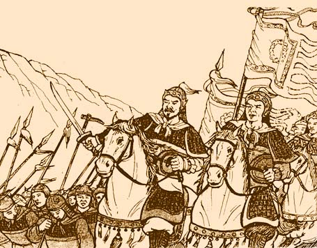
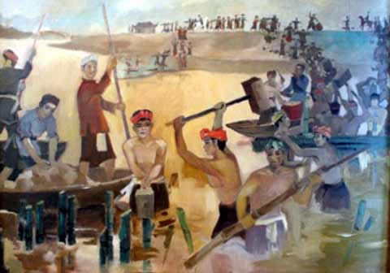
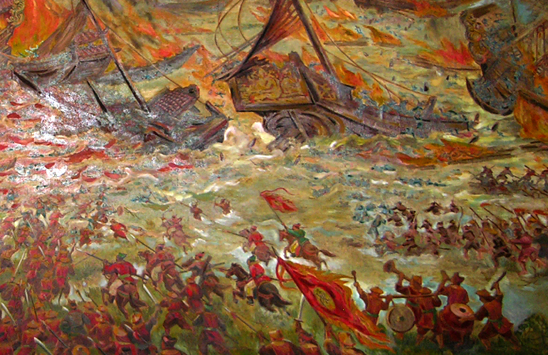
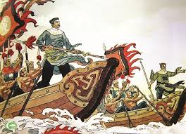
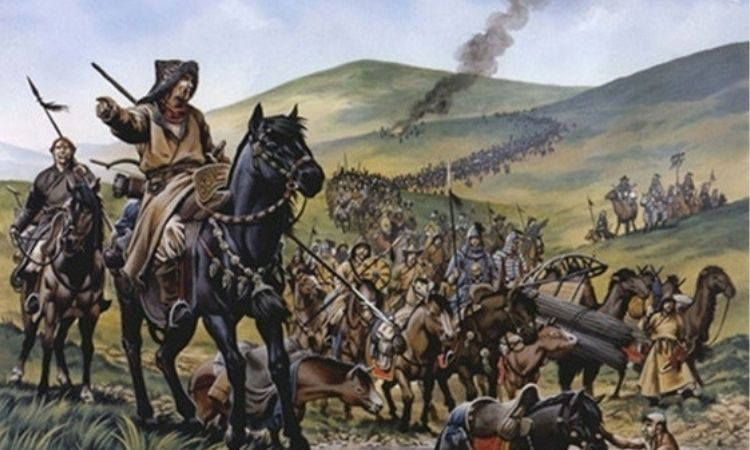

Các điểm dừng mở khóa dần theo từng chương. Sơ đồ cách điệu, không theo tỷ lệ địa lý thật.
ĐÃ KIỂM CHỨNG
Tiêu đề
Nội dung...
Trích nguồn
🔥
Liên tiếp
0
Trả lời liên tiếp đúng!
🔥 COMBO x3
+10 điểm thưởng
Điểm
0
Danh Hiệu
—
🏹
Sử Việt Tương Tác
LÝ THƯỜNG KIỆT Tiên Phát Chế Nhân
Năm 1075 — 1077 · Nam Quốc Sơn Hà
Ngươi là Lý Thường Kiệt — Thái úy triều Lý, người dám phá lệ đem quân đánh trước sang đất Tống để chặn thế giặc, rồi dựng phòng tuyến sông Như Nguyệt làm nên đại thắng lịch sử. Từ bài thơ thần "Nam quốc sơn hà" đến quyết định giảng hòa đầy trí tuệ: một hành trình 7 chương về bản lĩnh và tầm nhìn giữ nước.
🏹 7 chương🎓 Kiến thức + Thử thách📖 Có nguồn tham khảo
▾ hoặc cuộn xuống
⚔️ CHƯƠNG I · CUỐI 1075 — NGUY CƠ PHƯƠNG BẮC 📖 nguồn
🏹 THĂNG LONG, CUỐI NĂM 1075
1
1075
Nguy Cơ
2
1075
Đánh Trước
3
1076
Phòng Tuyến
4
1076
Giữ Vững
5
1077
Thơ Thần
6
1077
Đại Thắng
7
1077
Nghị Hòa
🏹Thế Trận
0%
📚 BỐI CẢNH LỊCH SỬ
Đầu những năm 1070, nhà Tống dưới sự chủ trương của Tể tướng Vương An Thạch ráo riết chuẩn bị xâm lược Đại Việt: tích trữ lương thảo, đóng thuyền chiến, dồn quân tại các châu Ung, Khâm, Liêm giáp biên giới phía Nam.
Lý Thường Kiệt — khi đó giữ chức Thái úy, chức quan võ cao nhất triều đình — đứng trước bản đồ biên giới trải rộng trên bàn. Trinh sát vừa báo về: kho lương của Tống tại Ung Châu đã chất đầy đủ cho một cuộc viễn chinh dài ngày.
MỘT ĐẠI THẦN TRONG TRIỀU
"Thưa Thái úy, quân ta nên củng cố phòng thủ trong nước, đợi giặc đến rồi đánh cho chắc. Đem quân sang đất người là việc chưa từng có tiền lệ, e rằng thiên hạ sẽ dị nghị."
Lý Thường Kiệt trầm ngâm nhìn ra phía Bắc. Nếu ngồi yên chờ giặc chuẩn bị xong xuôi, thế trận sẽ hoàn toàn nghiêng về phía địch. Nhưng đem quân đánh sang đất nhà Tống — điều chưa một triều đại nào của Đại Việt từng làm — là một quyết định chưa có tiền lệ.
🎓 KIẾN THỨC LỊCH SỬ
Ai là Tể tướng nhà Tống, người chủ trương ráo riết chuẩn bị xâm lược Đại Việt đầu những năm 1070?
📖 SỰ THẬT LỊCH SỬ
Nhà Tống cho tích trữ lương thảo, đóng thuyền chiến, tập trung quân tại các châu Ung, Khâm, Liêm giáp biên giới — âm mưu thôn tính Đại Việt lộ rõ trước khi họ kịp phát động chiến dịch.
💭 SUY NGẪM (không chấm điểm)
Làm điều chưa ai từng làm, dù đúng đắn về mặt chiến lược, vẫn có thể bị người đời dị nghị. Điều gì giúp một người dám hành động dù biết sẽ bị hiểu lầm?
Không có đáp án đúng/sai, đây là câu hỏi để bạn tự suy ngẫm.
⚡ LỰA CHỌN CỦA BẠN
✅ LỰA CHỌN A — ĐÚNG LỊCH SỬ!
🏹Chính xác! Lý Thường Kiệt quyết định chủ động đem quân đánh sang đất Tống, phá vỡ toàn bộ thế chuẩn bị của địch trước khi chúng kịp phát động chiến dịch.
💡 ĐIỀU THÚ VỊĐây là lần đầu tiên trong lịch sử, quân đội Đại Việt chủ động vượt biên giới tấn công sang lãnh thổ Trung Hoa — một quyết định chưa từng có tiền lệ trong bang giao hai nước.
⚡ TIẾP TỤC
❌ LỰA CHỌN B — MẤT THẾ CHỦ ĐỘNG
⚠️Đây không phải điều đã xảy ra. Ngồi chờ giặc chuẩn bị xong xuôi đồng nghĩa với việc trao toàn bộ thế chủ động cho quân Tống — họ sẽ chọn thời điểm, chọn đường tiến quân có lợi nhất cho mình.
Nếu chọn thế phòng thủ bị động, quân Tống sẽ có thêm nhiều tháng để hoàn thiện kho lương thảo, đóng thêm thuyền chiến và tập kết quân số đông đảo hơn. Khi họ tấn công với sự chuẩn bị đầy đủ, Đại Việt có thể sẽ phải đối mặt với một cuộc chiến khốc liệt và kéo dài hơn rất nhiều so với thực tế lịch sử.
⚡ NHÌN LẠI
❌ LỰA CHỌN C — KHÔNG NGĂN ĐƯỢC DÃ TÂM
💭Đây không phải điều đã xảy ra. Nhà Tống đã quyết tâm xâm lược từ lâu — triều cống hay hoãn binh không thể ngăn được dã tâm của Vương An Thạch.
Nhà Tống lúc này đã dốc sức chuẩn bị cho một chiến dịch quân sự quy mô lớn — triều cống hay ngoại giao mềm mỏng khó lòng thay đổi được quyết tâm đó. Rất có thể việc trì hoãn chỉ khiến Đại Việt mất thêm thời gian quý giá mà không đạt được kết quả gì, trong khi quân Tống vẫn tiếp tục chuẩn bị lực lượng.
⚡ NHÌN LẠI
🔥 CHƯƠNG II · CUỐI 1075 — TIÊN PHÁT CHẾ NHÂN 📖 nguồn

🔥 UNG CHÂU — KHÂM CHÂU — LIÊM CHÂU
1
1075
Nguy Cơ
2
1075
Đánh Trước
3
1076
Phòng Tuyến
4
1076
Giữ Vững
5
1077
Thơ Thần
6
1077
Đại Thắng
7
1077
Nghị Hòa
📚 BỐI CẢNH
Cuối năm 1075, Lý Thường Kiệt cùng Tông Đản chỉ huy hơn 10 vạn quân bất ngờ vượt biên giới, tấn công thẳng vào các căn cứ chuẩn bị xâm lược của nhà Tống tại Ung Châu, Khâm Châu, Liêm Châu.
Chiến dịch diễn ra thần tốc và bất ngờ đến mức quân Tống trở tay không kịp. Kho lương thảo, vũ khí chất đầy trong thành Ung Châu — nơi được xem là bàn đạp cho cuộc xâm lược — nay nằm trong tầm kiểm soát của quân Đại Việt.
TÔNG ĐẢN — PHÓ TƯỚNG
"Thưa Thái úy, thành đã hạ. Kho lương và vũ khí của giặc giờ nằm trong tay ta. Có nên ở lại chiếm giữ luôn vùng đất này để mở rộng bờ cõi không?"
Đây là câu hỏi về mục đích thật sự của chiến dịch: phá hủy thế chuẩn bị của giặc, hay tham vọng chiếm đất lâu dài?
⚡ LỰA CHỌN CỦA BẠN
Nếu chọn ở lại chiếm đóng, quân Đại Việt sẽ phải dàn trải lực lượng trên một vùng đất xa lạ, khó tiếp tế, dễ bị quân Tống từ các vùng lân cận bao vây phản công. Mục đích ban đầu — làm chậm và suy yếu khả năng xâm lược của địch — cũng có thể không đạt được trọn vẹn vì quân ta sẽ bị cuốn vào một cuộc chiến phòng thủ kéo dài trên đất khách.
📖 SỰ THẬT ÍT BIẾT
Toàn bộ kho lương thảo, vũ khí chuẩn bị cho cuộc xâm lược Đại Việt bị phá hủy hoàn toàn. Đây là lần đầu tiên trong lịch sử, quân đội Đại Việt chủ động tấn công sang lãnh thổ Trung Hoa.
🎓 TEST KIẾN THỨC
Ai là phó tướng cùng Lý Thường Kiệt chỉ huy chiến dịch đánh sang đất Tống năm 1075?
🏹
"Ngồi yên đợi giặc, không bằng đem quân đánh trước để chặn thế mạnh của giặc."
— Lý Thường Kiệt, chủ trương chiến lược "Tiên phát chế nhân"
⚡ TIẾP TỤC
🛡️ CHƯƠNG III · ĐẦU 1076 — PHÒNG TUYẾN SÔNG NHƯ NGUYỆT 📖 nguồn

🛡️ BỜ NAM SÔNG NHƯ NGUYỆT
1
1075
Nguy Cơ
2
1075
Đánh Trước
3
1076
Phòng Tuyến
4
1076
Giữ Vững
5
1077
Thơ Thần
6
1077
Đại Thắng
7
1077
Nghị Hòa
📚 BỐI CẢNH
Sau khi đạt mục đích làm chậm và suy yếu quân Tống, Lý Thường Kiệt rút quân về nước. Ông hiểu rõ: nhà Tống sẽ không dễ dàng bỏ cuộc, một cuộc báo thù quy mô lớn hơn đang được chuẩn bị.
Trở về Thăng Long, Lý Thường Kiệt lập tức cho khảo sát địa hình biên giới phía Bắc. Trên bản đồ, một con sông chắn ngang mọi con đường tiến vào kinh thành thu hút sự chú ý của ông: sông Như Nguyệt.
📜
CỬA ẢI KIẾN THỨC
Trả lời đúng 3 câu hỏi liên tiếp về phòng tuyến sông Như Nguyệt để mở khóa và tiếp tục chương!
📜 Cần đúng 3/3 câu hỏi
📜 CÂU HỎI 1/3
Vì sao Lý Thường Kiệt chọn đúng sông Như Nguyệt (sông Cầu) để xây dựng phòng tuyến chặn quân Tống?
📜 CÂU HỎI 2/3
Nhà Tống cử ai đem 30 vạn quân báo thù, tràn sang Đại Việt năm 1076?
📜 CÂU HỎI 3/3
Phòng tuyến sông Như Nguyệt được xây dựng dọc theo bờ nào của con sông?
Lý Thường Kiệt cho quân gấp rút xây dựng phòng tuyến kiên cố dọc bờ nam sông Như Nguyệt — biến cả con sông thành một bức tường thành tự nhiên chắn ngang con đường tiến vào kinh đô.
📖 SỰ THẬT ÍT BIẾT
Năm 1076, đúng như dự đoán, nhà Tống sai Quách Quỳ đem 30 vạn quân báo thù, tràn sang Đại Việt. Nhưng lần này, quân Tống vấp phải một phòng tuyến đã được chuẩn bị kỹ lưỡng từ trước, không thể dễ dàng vượt qua.
📚 BỐI CẢNH
30 vạn quân Tống do Quách Quỳ chỉ huy áp sát bờ Bắc sông Như Nguyệt. Nhiều lần chúng cố vượt sông bằng bè, phao đều bị quân Đại Việt đẩy lui, nhưng áp lực vẫn không ngừng gia tăng từng ngày.
Một tướng trẻ tìm đến doanh trại của Lý Thường Kiệt, mặt đầy lo lắng. Quân Tống đông hơn nhiều, đã vây ép nhiều ngày liền, tinh thần binh sĩ bắt đầu dao động.
TƯỚNG TRẺ DƯỚI TRƯỚNG
"Thưa Thái úy, quân giặc đã vây ép nhiều ngày, binh sĩ ta bắt đầu mệt mỏi. Có nên chủ động vượt sông tấn công trước để giải tỏa áp lực không ạ?"
Lý Thường Kiệt nhìn ra dòng sông đang cuộn chảy — chính con sông này đang là lợi thế lớn nhất của quân ta. Từ bỏ vị trí phòng thủ để chủ động tấn công lúc này có đáng không?
💭 SUY NGẪM (không chấm điểm)
Khi đang giữ lợi thế địa hình, điều gì khó hơn: tấn công để giải tỏa áp lực tâm lý, hay kiên nhẫn chờ đợi dù áp lực đang đè nặng?
Không có đáp án đúng/sai.
⚡ LỰA CHỌN CỦA BẠN
Nếu quân Đại Việt chủ động rời bỏ vị trí phòng thủ kiên cố để tấn công quân Tống đông đảo hơn nhiều lần ngay trên phần đất trống, lợi thế địa hình sông nước sẽ mất đi hoàn toàn. Quân ta có thể sẽ chịu tổn thất nặng nề trước một đội quân đông hơn gấp bội, làm lung lay cả thế trận đã dày công xây dựng.
📖 SỰ THẬT ÍT BIẾT
Thời tiết khắc nghiệt, dịch bệnh hoành hành khiến quân Tống ngày càng suy yếu, tinh thần sa sút trầm trọng trong lúc vây hãm bên bờ Bắc sông Như Nguyệt.
🎓 TEST KIẾN THỨC
Quân Tống nhiều lần tìm cách vượt sông Như Nguyệt bằng phương tiện gì?
⚡ TIẾP TỤC
📜 CHƯƠNG V · ĐẦU 1077 — BÀI THƠ THẦN TRONG ĐÊM 📖 nguồn

📜 ĐÊM KHUYA BÊN SÔNG NHƯ NGUYỆT
1
1075
Nguy Cơ
2
1075
Đánh Trước
3
1076
Phòng Tuyến
4
1076
Giữ Vững
5
1077
Thơ Thần
6
1077
Đại Thắng
7
1077
Nghị Hòa
📚 BỐI CẢNH
Giữa lúc hai bên giằng co ác liệt bên bờ sông, tinh thần quân sĩ cả hai phía đều đang ở giai đoạn căng thẳng. Một trận chiến kéo dài không chỉ tiêu hao sức lực, mà còn bào mòn ý chí.
Lý Thường Kiệt biết rõ: chiến thắng không chỉ đến từ vũ khí và chiến hào, mà còn từ niềm tin của chính binh sĩ mình — và nỗi hoang mang trong lòng quân địch.
MỘT MƯU SĨ THÂN CẬN
"Thưa Thái úy, quân ta đã kiên cường giữ vững phòng tuyến nhiều tháng, nhưng lòng người cũng cần một điều gì đó lớn lao hơn để tin tưởng tuyệt đối vào chiến thắng."
⚡ LỰA CHỌN CỦA BẠN
Một cuộc chiến kéo dài không chỉ được quyết định bởi vũ khí và công sự, mà còn bởi tinh thần của cả hai bên. Nếu không có thêm yếu tố củng cố niềm tin, quân ta có thể dần mệt mỏi sau nhiều tháng giằng co, trong khi quân Tống — dù đang suy yếu — vẫn có thể tìm được cơ hội tâm lý để cầm cự lâu hơn.
📜
"Nam quốc sơn hà Nam đế cư. Tiệt nhiên định phận tại thiên thư. Như hà nghịch lỗ lai xâm phạm. Nhữ đẳng hành khan thủ bại hư."
— Bài thơ thần, tương truyền của Lý Thường Kiệt, đêm bên sông Như Nguyệt 1077
📖 SỰ THẬT ÍT BIẾT
Nhiều nhà sử học cho rằng chính Lý Thường Kiệt đã cho người ngâm bài thơ này trong đêm tối để đánh vào tâm lý đôi bên. Quân Tống nghe xong hoang mang, còn quân ta thì phấn khích tột độ, tin rằng có thần linh phù trợ.
🎓 TEST KIẾN THỨC
Bài thơ Nam Quốc Sơn Hà được xem là gì trong lịch sử dân tộc?
💭 SUY NGẪM (không chấm điểm)
Vì sao đôi khi một bài thơ, một câu chuyện lại có sức mạnh xoay chuyển tinh thần cả một đội quân, mạnh hơn cả vũ khí?
Không có đáp án đúng/sai.
⚡ TIẾP TỤC
🎆 CHƯƠNG VI · 1077 — ĐẠI THẮNG SÔNG NHƯ NGUYỆT 📖 nguồn

🎆 KHOẢNH KHẮC PHẢN CÔNG
1
1075
Nguy Cơ
2
1075
Đánh Trước
3
1076
Phòng Tuyến
4
1076
Giữ Vững
5
1077
Thơ Thần
6
1077
Đại Thắng
7
1077
Nghị Hòa
📚 BỐI CẢNH
Sau bài thơ thần vang lên trong đêm, tinh thần quân Tống hoang mang rõ rệt, trong khi quân ta phấn chấn tin tưởng có thần linh phù trợ. Thời tiết khắc nghiệt và dịch bệnh tiếp tục bào mòn sức chiến đấu của địch.
Lý Thường Kiệt đứng trên vọng gác, quan sát doanh trại quân Tống bên kia sông. Đội hình của chúng đã lỏng lẻo hơn trước rất nhiều — đây có thể là thời cơ ông đã chờ đợi suốt nhiều tháng.
TƯỚNG TIÊN PHONG
"Thưa Thái úy, quân giặc đang suy yếu rõ rệt. Có nên xuất quân phản công quyết định ngay bây giờ không ạ?"
Đây là thời điểm quyết định của cả chiến dịch — đánh quá sớm khi giặc còn sức kháng cự, hay đánh quá muộn để lỡ mất thời cơ vàng, đều có thể phải trả giá đắt.
⚡ LỰA CHỌN CỦA BẠN
✅ LỰA CHỌN A — ĐÚNG LỊCH SỬ!
🎆Chính xác! Nắm bắt đúng thời cơ, Lý Thường Kiệt cho quân bất ngờ vượt sông phản công đúng lúc quân Tống không ngờ tới nhất.
🎓 KIẾN THỨC LỊCH SỬ
Sau khi đại bại tại sông Như Nguyệt, quân Tống buộc phải làm gì?
⚔️
Hàng vạn quân Tống bỏ mạng, buộc phải rút chạy về nước trong tình cảnh thảm hại. Quân Đại Việt giành thắng lợi quyết định, bảo vệ trọn vẹn nền độc lập tự chủ.
— Đại thắng sông Như Nguyệt, 1077
💡 KẾT QUẢChiến thắng Như Nguyệt bảo vệ vững chắc nền độc lập tự chủ mà Đinh, Lê, Lý đã dày công xây dựng — chấm dứt hoàn toàn tham vọng xâm lược của nhà Tống trong nhiều thế hệ sau.
⚡ TIẾP TỤC
❌ LỰA CHỌN B — LỠ MẤT THỜI CƠ
⚠️Đây không phải điều đã xảy ra. Chờ đợi quá lâu có nguy cơ để quân Tống được tiếp viện hoặc kịp củng cố lại tinh thần đang dao động, khiến trận đánh quyết định trở nên khó khăn hơn nhiều.
Nếu tiếp tục trì hoãn quá lâu, quân Tống có thể nhận được thêm viện binh hoặc quân nhu từ Trung Nguyên, giúp họ phục hồi phần nào sức chiến đấu và tinh thần. Thời cơ vàng khi địch suy yếu nhất, hoang mang nhất sau bài thơ thần có thể sẽ trôi qua, khiến trận đánh quyết định sau này phải trả giá đắt hơn nhiều.
⚡ NẮM BẮT THỜI CƠ
🕊️ CHƯƠNG VII · 1077 — NGHỊ HÒA, ĐỈNH CAO TRÍ TUỆ 📖 nguồn

🕊️ SAU CHIẾN THẮNG, BIÊN GIỚI 1077
1
1075
Nguy Cơ
2
1075
Đánh Trước
3
1076
Phòng Tuyến
4
1076
Giữ Vững
5
1077
Thơ Thần
6
1077
Đại Thắng
7
1077
Nghị Hòa
📚 BỐI CẢNH
Sau đại thắng, quân Tống tàn tạ đang tháo chạy trong hỗn loạn. Quân Đại Việt đang ở thế thắng tuyệt đối, hoàn toàn có thể truy kích để tiêu diệt hoàn toàn tàn quân địch.
Các tướng lĩnh dưới trướng tụ họp, khí thế chiến thắng vẫn còn sục sôi. Một quyết định quan trọng không kém gì những trận đánh vừa qua đang chờ Lý Thường Kiệt đưa ra.
MỘT TƯỚNG LĨNH HĂNG HÁI
"Thưa Thái úy, quân giặc đang tan tác, đây chính là thời cơ để truy kích, tiêu diệt hoàn toàn, rửa hận cho những gì chúng đã gây ra!"
Lý Thường Kiệt trầm ngâm. Chiến thắng quân sự đã trọn vẹn — nhưng điều gì mới thực sự mang lại hòa bình lâu dài cho đất nước?
💭 SUY NGẪM (không chấm điểm)
Khi đang ở thế thắng tuyệt đối, điều gì khó hơn: tiếp tục truy kích để rửa hận, hay dừng lại đúng lúc để giữ hòa bình lâu dài?
Không có đáp án đúng/sai.
⚡ LỰA CHỌN CỦA BẠN
Nếu chọn truy kích tận diệt, dù có thể mang lại một chiến thắng quân sự trọn vẹn hơn về mặt hình thức, mối thù giữa hai nước có nguy cơ trở nên sâu sắc và khó hòa giải hơn rất nhiều trong tương lai. Việc chủ động giảng hòa sau khi đã giành chiến thắng quyết định giúp Đại Việt vừa khẳng định được sức mạnh, vừa mở ra một giai đoạn hòa bình lâu dài với phương Bắc.
📖 SỰ THẬT ÍT BIẾT
Nhà Tống chấp nhận giảng hòa, rút quân hoàn toàn khỏi Đại Việt, công nhận chủ quyền và không dám dòm ngó phương Nam suốt nhiều thế hệ sau.
🎓 TEST KIẾN THỨC CUỐI
Điều gì làm nên tầm vóc đặc biệt của Lý Thường Kiệt so với nhiều danh tướng khác trong lịch sử?
🕊️
Chiến thắng Như Nguyệt 1077 bảo vệ vững chắc nền độc lập tự chủ mà Đinh, Lê, Lý đã dày công xây dựng — kết hợp cả sức mạnh quân sự lẫn trí tuệ ngoại giao.
— Di sản Lý Thường Kiệt, còn mãi với non sông
⚡ HOÀN THÀNH HÀNH TRÌNH
🏆
HÀNH TRÌNH HOÀN THÀNH!
0 điểm
—
Bạn đã hoàn thành hành trình cùng Lý Thường Kiệt!
🗺️ BẢN ĐỒ CHIẾN DỊCH
Sơ đồ cách điệu các điểm dừng quan trọng — không theo tỷ lệ địa lý thật.
📔 NHẬT KÝ HÀNH TRÌNH CỦA BẠN
📚 BA BÀI HỌC VƯỢT THỜI GIAN1. CHỦ ĐỘNG NẮM THẾ CỜ
"Ngồi yên đợi giặc, không bằng đem quân đánh trước để chặn thế mạnh của giặc." Lý Thường Kiệt dạy rằng: đôi khi phòng thủ tốt nhất chính là hành động trước, dù điều đó chưa từng có tiền lệ.
2. SỨC MẠNH TINH THẦN SONG HÀNH CÙNG VŨ LỰC
Bài thơ thần "Nam quốc sơn hà" cho thấy: một câu chữ đúng lúc có thể mạnh hơn cả ngàn quân — chiến thắng không chỉ đến từ chiến hào, mà từ niềm tin được thắp lên đúng thời điểm.
3. BIẾT DỪNG LẠI ĐÚNG LÚC
Dù đang thắng thế tuyệt đối, Lý Thường Kiệt chọn giảng hòa thay vì truy kích tận diệt — chiến thắng thật sự không phải là hủy diệt kẻ thù, mà là mang lại hòa bình lâu dài.
Những bài học này không chỉ dành cho lịch sử — chúng là những bài học cho cuộc sống hiện tại của chúng ta.
Các sự kiện, ngày tháng, câu nói trong trang này được đối chiếu từ các nguồn chính sử dưới đây. Các đoạn hội thoại (đánh dấu viền xanh lá 🔵) là dựng lại minh họa dựa trên tinh thần lịch sử, không phải nguyên văn ghi chép.
Tài liệu chính thống
Đại Việt Sử Ký Toàn Thư (Ngô Sĩ Liên và sử thần triều Hậu Lê)
Nam Quốc Sơn Hà — tương truyền của Lý Thường Kiệt
Việt Sử Lược, tác giả khuyết danh thời Trần
Ghi chú về phương pháp thể hiện
Ngày tháng, số liệu, kết quả sự kiện: dựa trên tư liệu đã kiểm chứng
Hội thoại giữa các nhân vật: dựng lại nhằm mục đích minh họa, giúp người học hình dung bối cảnh — không phải trích dẫn nguyên văn có ghi chép
Các câu nói lịch sử đặt trong dấu ngoặc kép đậm: trích dẫn có nguồn xác thực (xem icon 📖 bên cạnh)